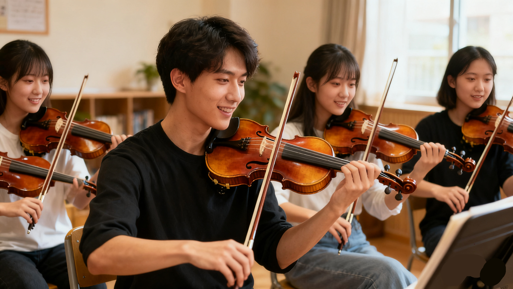

小提琴社招新
社团简介|
活动安排|
风采展示|
社员故事|
在线报名
一、社团简介
小提琴社团成立于 2018 年 9 月，是由学校一群热爱音乐、痴迷乐器的学生自发组建，经校团委审核批准成立的校级文化类社团。自成立以来，社团始终以 “传承乐器文化，奏响青春乐章” 为宗旨，致力于为全校乐器爱好者搭建一个学习交流、展示自我的平台，让更多人感受乐器的魅力，领略音乐的真谛，如今已成为学校极具影响力和凝聚力的社团之一。
社团涵盖的乐器种类丰富多样，无论是中国传统民族乐器，还是西方经典管弦乐器，在这里都能找到对应的交流圈子。民族乐器方面，有古筝、二胡、琵琶、竹笛、扬琴等，一群热爱传统文化的社员们，日复一日地练习指法、打磨技巧，让古老的民族乐器在校园里焕发出新的生机；西方乐器方面，钢琴、小提琴、大提琴、吉他、萨克斯等应有尽有，社员们用精湛的技艺演绎着西方音乐的浪漫与激情。此外，社团还设有打击乐组，架子鼓、非洲鼓等乐器的加入，为社团的音乐表演增添了更多活力与节奏感。
在日常运营中，社团拥有完善的组织架构，确保各项活动有序开展。社团设有社长一名，全面统筹社团的整体发展规划；副社长两名，分别负责活动策划与社员管理；各乐器组别设有组长，负责组织本组的日常训练、技术指导以及成员沟通工作。同时，社团还配备了专业的指导老师，指导老师均来自学校音乐系或校外专业音乐机构，具备丰富的教学经验和深厚的专业功底，定期为社员们开展专业培训，解答社员在乐器学习过程中遇到的难题。
返回顶部
二、活动安排
为了让社员们在社团中既能提升技艺，又能收获快乐与友谊，社团制定了丰富且系统的活动安排，主要分为日常训练、特色活动和大型演出三大类。
| 弦音雅韵乐器社 2025 年春季学期活动安排表 |
| 活动名称 |
活动时间 |
活动地点 |
负责人 |
| 新成员见面会 |
3 月第 2 周 周五晚 |
学生活动中心 音乐教室 201 |
张强 |
| 小提琴基础教学公开课 |
3 月第 3 周 周六下午 |
李娜 |
| 校园草地弹唱会 |
4 月第 2 周 周日 |
操场东侧草坪 |
王浩 |
| 期末专场音乐会 |
6 月第 1 周 周六晚 |
大学生活动中心 大礼堂 |
刘芳 |
返回顶部
三、风采展示
下面是一张往届校园音乐会的照片示意。点击图片，可以查看更详细的活动介绍页面。

活动以自由弹唱、主题合奏为核心，穿插技巧交流与即兴互动，让社员在轻松氛围中练琴、交友、共享小提琴乐趣。
宣传视频
返回顶部
四、社员故事
小李的"茧与歌":
大一刚进小提琴社，小李连拨片都捏不稳。第一次练“53231323” 的分解和弦，手指在钢弦上滑得生疼，练十分钟就想把小提琴扔在一边。学姐把自己的 “练琴日记” 借给他看 —— 里面夹着带血的创可贴，写着 “按 F 和弦第 37 次，终于不闷音了”。从那天起，小李的课表旁多了 “练琴 1 小时” 的标注。晚自习后，他总抱着小提琴躲在活动室角落，对着手机节拍器一点点校准节奏。指尖从红肿到结痂，再到长出淡褐色的茧,琴谱上的“Am”“C”“G”从陌生符号，变成能流畅衔接的旋律。新年晚会彩排时，小李还在紧张到忘词。社长拍着他的肩膀说：“你练了一百多遍，闭着眼都能弹，怕什么？” 当聚光灯落在他身上，指尖弹出《小幸运》前奏的瞬间，他突然发现 —— 那些磨破的指尖、重复的练习，早把“不会” 变成了“会”，把胆怯变成了从容。
小王的“麦克风与勇气”:
小王第一次参加社团排练，全程缩在沙发角落，连合唱都不敢张嘴。他总说 “我声音不好听”“怕唱错被笑”，连递琴给别人都要犹豫半天。有次社团练《平凡之路》，副歌部分少个人和声。社长故意把麦克风递到他面前：“就唱一句，没人会怪你。” 小王攥着小提琴背带，喉咙发紧，却在听到身边人轻声跟着哼时，慢慢张开了嘴。后来的日子，大家总找机会让他 “开口”：有人故意弹错节奏，让他帮忙纠正；有人把合唱里的 “高光句” 留给她。学期汇报演出那天，小王抱着小提琴站在舞台上，虽然手还在抖，但当他唱完最后一句，台下响起的掌声里，他听见有人喊 “小王你超棒”—— 原来，勇敢一次，就能看见不一样的自己。
一群人的“零食与琴谱”：
周末的小提琴社活动室，永远飘着零食的香味。有人带面包，有人带奶茶，有人揣着刚扒好的谱子，一进门就喊 “快来学《稻香》，前奏超简单！”小宇刚失恋那周，躲在活动室里弹《后来》，弹到哽咽。有人默默递过纸巾，有人拿起另一把小提琴，轻轻跟着弹和声。那天没人劝他 “别难过”，只是一群人围着小提琴，把情绪融进旋律里，弹到天黑。考试周时，活动室又变成 “自习室”。有人刷题，有人练琴，学累了就一起弹首轻松的歌。后来大家凑钱买了把新小提琴，刻上 “小提琴社 2024”，放在活动室最显眼的地方 —— 这不是某个人的琴，是一群人一起守护的 “青春道具”。
给你的 “邀请函”：
现在活动室的墙上，还贴着往届社员的便签：“第一次弹唱，跑调也开心”“在这里，我学会的不只是小提琴”“谢谢你们，让我敢唱歌”。如果你也想试试：从 “不会握琴” 到 “能弹一首歌”，从 “不敢开口” 到 “敢站在舞台上”，从 “一个人” 到 “一群志同道合的朋友”—— 那么，小提琴社的门永远开着。不用怕 “零基础”，有人会教你握琴姿势；不用怕 “内向”，有人会陪你慢慢开口；不用怕 “孤单”，这里永远有零食、琴谱和等待你的人。来这里，把你的故事，也藏进琴弦里吧。
返回顶部
五、小提琴社在线报名表
请认真填写以下信息，确保联系方式准确无误。 提交后，社团会通过电话或短信的方式通知面谈或试音时间。
提交表单后，如需修改信息，可以再次填写并提交最新的一份。
返回顶部